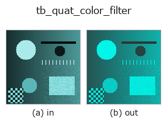

typed op• データ種: qimage → qimage
• 呼び出し: fullseye.apply(img, "tb_quat_color_filter", a=0.5, b=0.5) (2-D は 1 画像 + 2 スカラつまみ a,b∈[0,1] のモデル)

*図は合成の入力 128×128 で実際に走らせた出力。左が入力、右が出力。点群は上から見た散布(明るさ = z)、1-D 列は折れ線、体積は z 方向の最大値投影、動画は中央フレーム、複素画像は振幅、絵にならない返り値は値そのもの。*
*つまみ a は出力を変えない(実測: 0.1 / 0.5 / 0.9 で同一)。*
*つまみ b は出力を変えない(実測: 0.1 / 0.5 / 0.9 で同一)。*
段階(前置きの op → この op。左から順):
▸ tb_quat_color_filter: stages (docs site)
別の画像でも(合成シーン / 写真 / 硬貨。上段が入力、下段がその出力。つまみは既定):
▸ tb_quat_color_filter: other inputs (docs site)
特定の色方向だけを厳密に残す、または除去する。→ (H, W, 4)。
> 以下の詳細説明は原文のままです —— 要約と見出しは訳出済み。
`mode="remove" returns v - (v.g) g for the unit RGB direction g`:
the component along `g` is exactly zero everywhere afterwards, to
machine precision (measured max residual 5.8e-16 and 6.5e-16 on two random
colour images — seed-dependent only at the 1e-16 level),
and `remove + keep` reproduces the input to 0.0 exactly.
`mode="keep" returns the complementary (v.g) g`. The scalar part is
passed through untouched in both.
There is no default mode. The two are opposites, both return a valid
picture, and neither raises — so choosing for the caller would be a coin flip
that never announces itself.
Not a new algorithm, and this docstring will not pretend otherwise
-----------------------------------------------------------------
The `remove` branch is the specular-invariant projection of Mallick et
al. (2005), which this repository already implements as
`specularity.specular_free_transform for the rgbimage` sort. Rather
than write the same three lines twice, this operator *delegates* to it — so
agreement between the two sorts is by construction rather than by luck, and a
future fix in one is a fix in both. What is added here is the `keep`
branch (which has no counterpart there) and the `qimage` sort, so the
projection composes with :func:quat_color_rotate and :func:qft2.
What this can do that a channelwise pipeline cannot
---------------------------------------------------
A per-channel filter applies a diagonal matrix, and `I - g g^T` is diagonal
only when `g is a coordinate axis. For g = (1,1,1)/sqrt(3)` — remove
the grey axis, i.e. keep only chromatic content — the *best possible*
diagonal approximation is off by `||P - diag(P)||_2 = 0.666667` in operator
norm. Concretely, a pure red pixel `(1, 0, 0)` must become
`(0.666667, -0.333333, -0.333333)`; the best diagonal filter can only reach
`(0.666667, 0, 0), an error of 0.471405` — it cannot put anything into
the green and blue channels, because it multiplies each channel by a number
and both start at zero. The impossibility is structural, not a tuning gap.
(A full 3x3 colour matrix, of course, does it exactly; see
:func:quat_color_rotate for that half of the accounting.)
Raises `ValueError: *qimage* is not a valid (H, W, 4)` field;
*direction_rgb* is not a finite non-zero 3-vector; *mode* is not
`'remove' / 'keep'`.
Typed bridge of the quat op `quat_color_filter into the 2-D evolution registry: the same implementation, called under the op(v, a, b) convention. This op has no tunable parameter; a and b` are unused.
• サンプルデータ カタログ(DL URL / ライセンス) — 2-D は skimage.data(BSD/public)+ 合成、3-D は実データ源(Stanford/PDS 等)の DL URL。
• 演算子の来歴・参考文献 — この op 族の元になった研究/手法の出典。
下のプログラムは実際に走ることを確かめてある(図と同じ入力)。Studio のヘルプではこのブロックがボタンになり、その場で読み込んで実行できる。
img_to_rgb 0.50 0.50 tb_rgb_to_quaternion 0.50 0.50 tb_quat_color_filter 0.50 0.50
▸ Load this pipeline · Load & run
次の例は元の台帳 op quat_color_filter を呼ぶもの。この橋渡し op は同じ実装を fn(v, a, b) 規約に合わせただけなので、挙動はそのまま当てはまる(呼び出し形だけ違う)。
• quaternion_monogenic — py -3.11 examples/quaternion_monogenic.py
qimage を入力に取れる)identity · tb_quaternion_to_rgb · tb_quat_norm · tb_quat_conjugate_image · tb_quat_normalize_image · tb_monogenic_amplitude · tb_monogenic_phase · tb_monogenic_orientation
typed)tb_points_to_voxel · tb_estimate_point_normals · tb_iss_keypoints · tb_project_points · tb_render_point_depth · tb_statistical_outlier_removal · tb_radius_outlier_removal · tb_voxel_grid_downsample
*Provenance: ops.py — 2D operator registry. この per-op ノートは tools/opdocs.py md が自動生成(手編集しない)。*
© 2026 Kazufumi Furuse — Fullseye operator documentation. Licensed under Apache-2.0.
{kind=link}
{kind=link}